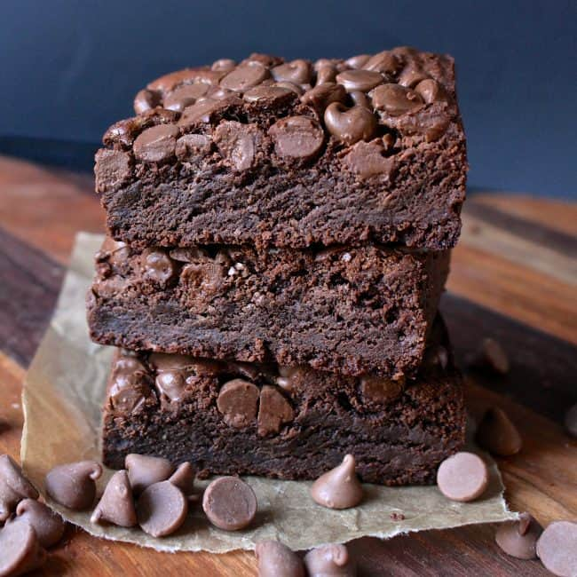

Brownies

Description
This ultra chocolatey brownie contains four different types of chocolate that were created by complete accident
Ingredients
- 1 cup of butter
- 2 1/4 cups granulated sugar
- 1/2 cup hershey's chocolate spread
- 3/4 cup cocoa powder
- 1/2 cup instant chocolate pudding mix
- 1 teaspoon salt
- 4 large eggs
- 1 teaspoon instant coffee
- 1 tablespoon vanilla
- 1 1/2 cups flour
- 2 cups milk chocolate chips
Instructions
- Preheat the oven to 350° and line a 13x9 with parchment paper. Set aside
- In a small sauce pan over low heat, melt butter completely. Stir in sugar and cook 1-2 minutes, stirring constantly. Don't let the sugar come to a boil
- Remove from heat and stir in the chocolate spread. Mix until completely combined
- Pour mixture into a big bowl and sift in the cocoa and pudding mix. You must sift or you'll end up with dry pieces of cocoa in the batter that won't mix completely
- Mix in the salt, eggs, instant coffee, and vanilla. Stir in the flour and mix until just combined. Pour into prepared pan and top with chocolate chips. Slightly press the chips into the batter
- Bake for 30-40 minutes or until a toothpick inserted in the center comes out clean
- It's always better to under bake than to over bake
home